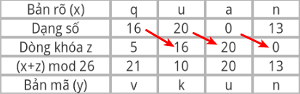
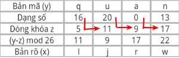

Cho P = C = K = L = Zn
Cho z1 = k, zi = xi-1 (i>=2)
Với 0 <= z <= 25
Mã hóa:
Ez(x) = (x + z) mod n
Giải mã:
Dz(y) = (y - z) mod n
Cách tính dãy khóa z
TH mã hóa
- z1 = k
- Sau đó lấy chéo xuống
- VD: Tính z khi biết k = 5, x = quan

TH giải mã
- z1 = k
- Sau đó lấy trên trừ dưới ở cột trước
- VD: Tính z khi biết k = 5, y = quan
